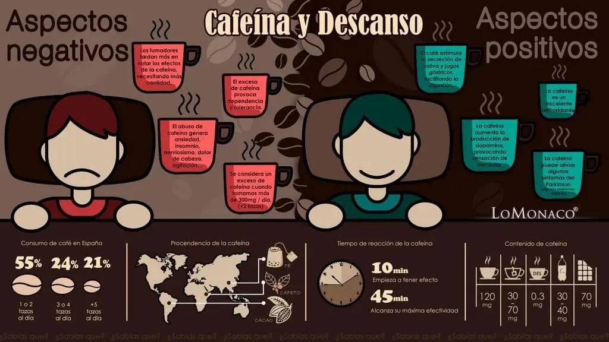

Propiedades de la cafeína y sus efectos en el organismo

PROPIEDADES DE LA CAFEÍNA Y SUS EFECTOS EN EL ORGANISMO
La cafeína es una sustancia estimulante que se encuentra de manera natural no solo al tomar café, si no también en otros muchos productos naturales, como por ejemplo las hojas del té, el cacao, la hierba mate …etc.
Tras su ingesta, se absorbe rápidamente y los efectos de la cafeína empiezan a aparecer, por lo que es normal sentir casi de inmediato una sensación de bienestar, que va aumentando a medida que estimula la secreción de dopamina. Los beneficios de la cafeína son varios, tanto a nivel anímico como a la hora de llenarnos de la energía que necesitamos. Además aporta a nuestro organismo otros réditos.
¿Para qué sirve la cafeína en nuestro cuerpo?
- El café hace que produzcamos más saliva y jugos gástricos, facilitando así la digestión.
- Es un excelente antioxidante, atacando a los radicales libres que pueden dañar nuestras células sanas.
- Parece ser que la cafeína, puede aliviar algunos síntomas a los enfermos de Parkinson.
Pero ojo con su consumo excesivo o con el momento del día en que nos tomamos una tacita de café, ya que al ser consumida como una bebida para no dormir, podemos excedernos en la cantidad que se recomienda tomar al día (unos 300 mg al día / 2 tazas), con el consiguiente perjuicio que pueden producir algunos efectos del café en el cuerpo: la cafeína provoca insomnio, nerviosismo, dolor de cabeza…
Además el consumo de cafeína puede llegar a provocar tolerancia y dependencia (cada vez queremos más y nos hace menos efecto).
Síntoma de la cafeína en nuestro sueño
La función de la cafeína es traspasar la barrera hematoencefálica y mediante un complejo mecanismo cerebral de bloqueo, inhibe la acción de una serie de neurotransmisores y sustancias que controlan el ciclo de sueño vigilia (sobre todo la adenosina), según algunos estudios.
A pesar de que empieza a hacer efecto en torno a los 10 minutos de haber consumido la dosis, su efecto máximo es a los 45 minutos después de haberla tomado.
No obstante existen algunos consejos que queremos ofrecerte desde LOMONACO, para que disfrutes de los placeres que nos ofrece esta sustancia sin afectarnos que nos afecte para dormir:
- No se debe sobrepasar nunca los 300 mg de cafeína al día (cómo curiosidad señalar que la ingesta de 10 gramos de cafeína provocaría la muerte segura). Para el cálculo, puede servirnos de guía la siguiente tabla:
- 1 taza de café 120 mg.
- 1 taza de té 30-70 mg.
- 1 taza de descafeinado 0.3 mg
- Colas 33cl. 30-40 mg.
- 1 chocolatina 70mg.
- Evita bebidas con cafeína después de las 3 de la tarde: un café para merendar no es la mejor opción, si tenemos en cuenta que la cafeína tarda en hacer efecto de media hora a una hora, y que su vida media en el organismo son 5 horas.
- Recuerda que no solo el café contiene cafeína: el chocolate, el té e incluso el mate también, por eso equilibra la cantidad que tomas a lo largo del día.